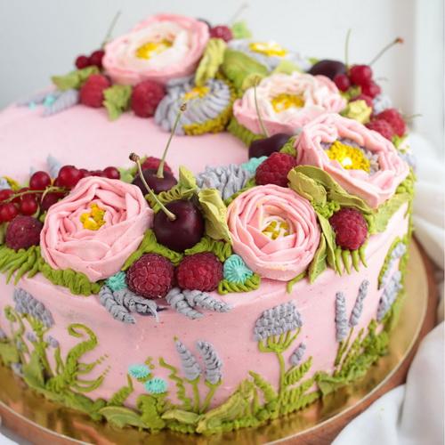

Весільні торти та солодощі на фуршет
Безліч ідей, десятки безсонних ночей, сумніви щодо стилю та кольору... Яким має бути весільний торт?
Однозначно смачним та ароматним, краcивим, а ще, враховуючи дань моді, фотогенічним, адже фото, на якому молодята частують одне одного шматочком торта є чи не в кожному весільному альбомі!
Найчастіше клієнтів цікавить яким же має бути торт за розміром.
Потрібно, перш за все, виходити з кількості запрошених, а також пори року. Хочеться аби торт змогли скуштувати всі гості і ніхто не був обділений. Тому краще, звичайно, замовити трохи більше за вагою торт, ніж потрібно.
Якщо враховувати, що весільний торт гості будуть куштувати вже після банкетного столу, то природно багато вони вже з'їсти не зможуть. Потрібно розраховувати приблизно по 100 або 200 грамів на людину.
Тобто число запрошених буде 30 осіб, то торт можна замовити за вагою від трьох до шести кілограмів.
Торти бувають різні - фруктові, желейні, масляні, з вершками, пісочні, бісквітні. Найкраще замовляти легкі торти. Ще треба враховувати і пору року.
Так як торт буде стояти на столі без холодильника весь банкет, тому потрібно замовляти безпечні торти з мінімумом крему, адже так швидко втрачають свій вигляд, а влутку ще й можуть зіпсуватися.
Отже, потрібно запам'ятати, якщо ви збираєтеся робити лише солодкий стіл, то кількість торта потрібно замовляти більше, якщо ж у вас буде кенді-бар, то ста грамів на людину цілком достатньо.
Вартість кілограму готового виробу 170-200 грн за кілограм (ціна змінюється залежно від наповнення). Вартість декору обговорюєтсья окремо (якщо мова йде про топери, мастичні фігурки чи живі квіти).
Також до вартості торту не завжди входить ціна підстваки - якщо ви хочете індивідуально-виготовлену, то ціну варто обговорювати разом з іншими деталями замовлення.
В доповонення до торта у мене завжди можна замовити зефір, асортиі корзиночок, еклери, тістечка "шу", пляцки, капкейки, кейкпопси,печиво, горішки, рогалики, сирник, десерти в стаканчиках.
Ціна залежить від виду та кількост і одиниць обраної позиції, а отже від 7 до 25 грн за штуку.

Декорування в техніці "Малайзія"
Сучасні задуми та бажання рухають кондитерів до нових технік та методик оздоби.
Саме таким, новим та оригінальним являється техніка "малайзія" - коли важко повірити, що квіти, які на перший погляд мов зіткані зі стрічок, це всього навсього впраність рук кондитера та якісно приготований крем.
Далекосхідна кулінарна школа часом шокує нас абсолютно неймовірними смаковими поєднаннями і своєї самобутньою естетикою. Торт у малайзійському стилі – прекрасний приклад неймовірних кондитерських традицій південно-сходу Азії.
Оформлювати десерти масою пишних натуралістичних квітів почали в Малайзії, звідти ця мода швидко поширилася в Китай, Корею, Японію, Сінгапур та інші східні країни. Сьогодні кухаря з Індокитаю вважаються кращими в світі кондитерами, які працюють в цій техніці.
Але найдивовижніше полягає в тому, що повторити багато шедеври можна і власноруч.
Зрозуміло, для цього потрібно мати певні теоретичні знання і як можна більше практикуватися.
Під таким декором можна "заховати" будь який торт. Тому якщо ви обрали наповнення, то загальну ціну виробу можна порахувати по формулі "ціна за кілограм* вагу торта +20%". Також можливе виготовлення капкейків з таким декором.
Нетрадиційні рішення для декору
Набридли мастика та солодкі креми? Хочете здивувати свого малюка та зробити його свято незабутнім?
Тоді запитайте в дитини про ідеальний торт, і навіть якщо Вам його побажання видадуться якимись нереальними - повірте, немає нічого неможливого, аби втілити дитячу мрію. Я радо відтворю декор по фото чи збереженій картинці.
Все що вам потрібно - узгодити зі мною декор та купити потрібні матеріали, або ж оплатити мені їх вартість по чеку. Тобто готовий торт буде коштувати "вартість за кілограм*вагу виробу+10% за нестандартнйи декор+оплта декору по чеку магазину"
Торти з пряничним декором
Ваш малюк хоче улюбленого мультиплікаційного героя? Чи оформлення торта з власними малюнками? Чи може Ви хочете просто потішити маленьких гостей смачними сюрпризами?
Тоді торт з пряниками - саме те, що Вам треба, адже окрім самого торта Ви можете замовити необмежену кількість смачних розписних пряників, які після забави зможете передати в якості гостинців маленьким гостям.
Ціна пряника залежить від складності, в середньому це 30-45 грн за один пряник. Також ви можете замовити подарункові набори пряників до вашого свята.
Інша випічка
Окрім тортів я радо приготую вам наступні десерти:
Сирник львівський (170 грн/кг, мінімальне замовлення 1.500 кг), шоколадні тарти (30 грн/шт, мінімальне замовлення 6 шт), пляцки (від 130 до 220 грн/кг залежно від виду),
горішки зі згущенкою та грецькими горіхами (4 грн/шт, мінімальне замолвення 15 шт), зефір (120 грн/порція), тістечка бисквітні (15 грн/шт, мінімальне замолвення 4 шт), коршички зефірні (15 грн/шт, мінімальне замовлення 6 шт),
капкейки в асортименті (ціна 18-26 грн/шт залдежно від декору та начинки), еклери з сирним крем-суфле ( 7-12 грн/шт залежно від розміру, мінімальне замовлення 10 шт). Також ви можете замовити солодкі коробочки з асортиментом даної продукції.
Якщо ви хочете щось, чого немає в даному списку - скажіть і я приготую вам улюблені смаколики, розрахувавши ціну та кількість згідно вашого замовлення!
Всі права захищені 2015-2017.